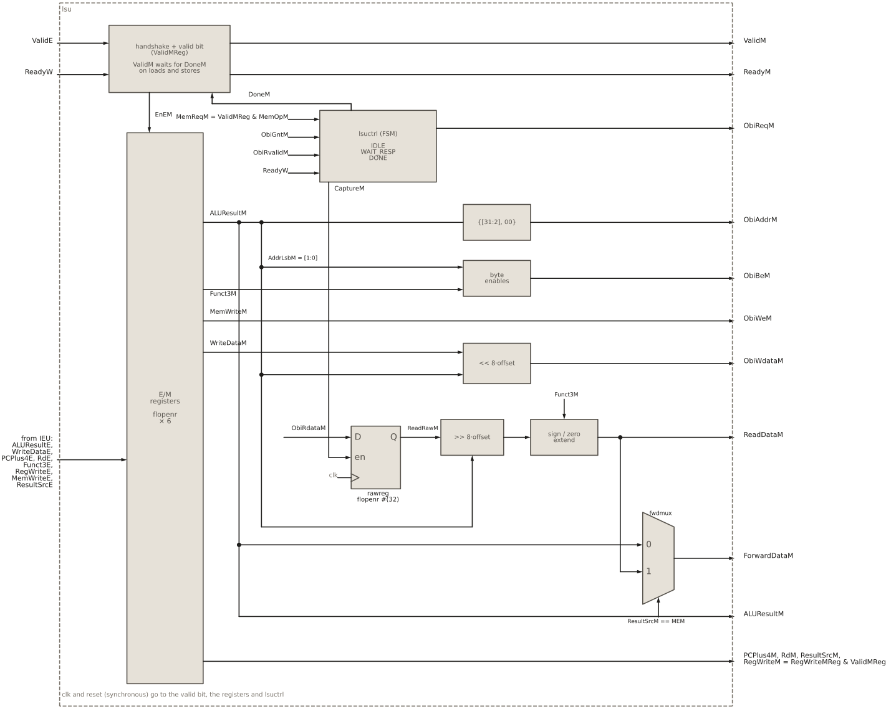
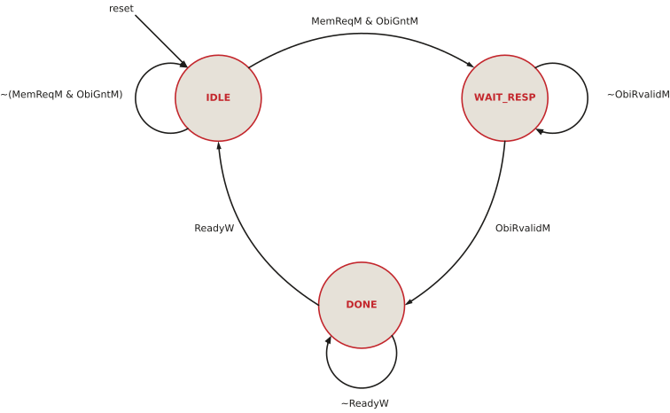
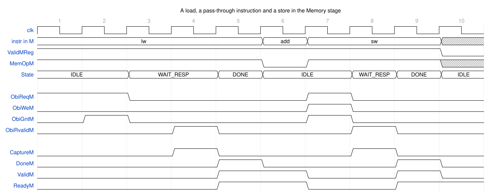

11 Load/store unit
Load/store unit
11.1 Goal for this week
- Know what the load/store unit (LSU) does, and how it differs from the stages before it
- Read the LSU interface, in particular the OBI signals for writing to memory
- Understand how the stage holds a memory instruction until its transaction is finished
- Design the LSU controller as an FSM, and process the data of byte and halfword accesses
11.2 Introduction
The load/store unit is the fourth stage of the HIPV pipeline, the Memory stage. Its design closely resembles the stages we have seen so far: it has the same valid/ready handshake, the same kind of pipeline registers, and, like the IFU, an FSM that talks to a memory. What is new is mostly what it does with the memory.
The role of the LSU is to give the core access to the data memory, for the load and store instructions. That gives it four properties:
- It communicates with the data memory through the OBI interface, the same protocol the IFU uses for the instruction memory.
- Unlike the IFU, which only reads instructions, the LSU also writes to memory, for the store instructions, alongside reading for the loads.
- It does not need to access memory all the time. Only loads and stores use the memory. Every other instruction, an
addor ajal, just passes through the stage to Writeback, in a single cycle. - It forwards its result back to the Execute stage, so that the next instruction can use it before it reaches the register file.
11.3 Interface of the LSU
The ports of the LSU fall into six groups:
module lsu (input logic clk, reset,
// handshake with the Execute stage
input logic ValidE,
output logic ReadyM,
// inputs from Execute
input logic [31:0] ALUResultE, WriteDataE, PCPlus4E,
input logic [4:0] RdE,
input logic [2:0] Funct3E,
input logic RegWriteE, MemWriteE,
input logic [1:0] ResultSrcE,
// handshake with the Writeback stage
output logic ValidM,
input logic ReadyW,
// stage outputs to Writeback
output logic [31:0] ALUResultM, ReadDataM, PCPlus4M,
output logic [4:0] RdM,
output logic RegWriteM,
output logic [1:0] ResultSrcM,
// forwarding to Execute
output logic [31:0] ForwardDataM,
// OBI master port to data memory
output logic ObiReqM,
input logic ObiGntM,
output logic [31:0] ObiAddrM,
output logic ObiWeM,
output logic [3:0] ObiBeM,
output logic [31:0] ObiWdataM,
input logic ObiRvalidM,
input logic [31:0] ObiRdataM);- Handshake with Execute:
ValidEandReadyM. - Inputs from Execute:
ALUResultE, which is the address for a load or store and the result for any other instruction;WriteDataE, the data a store writes;PCPlus4E, the return address ofjalandjalr; the destination registerRdE;Funct3E, which gives the size of the access; and the controlsRegWriteE,MemWriteEandResultSrcE. - Handshake with Writeback:
ValidMandReadyW. - Outputs to Writeback: the three candidate results (
ALUResultM, the loaded dataReadDataM, andPCPlus4M), the destination registerRdM, the write enableRegWriteM, andResultSrcM, which tells Writeback which of the three results to write. - Forwarding to Execute:
ForwardDataM, the result of the instruction in this stage. - OBI port to the data memory, described in Section 11.7.
11.4 Structure of the LSU

lsuctrl, the OBI address, byte enables and store data, the read path (rawreg, shift, sign/zero extension), and the forwarding multiplexer.
Figure 11.1 shows the LSU. It has six parts, and the rest of the chapter takes them in this order:
- the handshake logic, which accepts instructions from Execute and, for a memory instruction, holds it in the stage until the memory access is finished;
- the E/M pipeline registers;
- the FSM
lsuctrl, which runs the OBI transaction; - the logic that generates the OBI signals: the word address, the byte enables and the store data;
- the post-processing of loaded data: the register
rawreg, which captures the word from memory, followed by a shift and a sign or zero extension; - the forwarding of the result to Execute, and the outputs to Writeback.
11.5 Handshake logic
The handshake logic of the LSU has the same shape as in Decode and Execute, with one addition: a memory instruction cannot be handed on until its memory access is finished.
// E/M handshake: a memory instruction holds the stage until done
assign MemOpM = MemWriteM | (ResultSrcM == RESULT_MEM);
assign ValidM = ValidMReg & (~MemOpM | DoneM);
assign ReadyM = ~ValidMReg | (ValidM & ReadyW);
assign EnEM = ValidE & ReadyM;
// E/M valid bit
always_ff @(posedge clk)
if (reset) ValidMReg <= 1'b0;
else if (ReadyM) ValidMReg <= ValidE;EnEM is the handshake between Execute and the LSU: Execute offers an instruction (ValidE) and the LSU accepts it (ReadyM). As in the other stages, it enables the pipeline registers, so it is the moment the instruction enters the Memory stage.
11.5.1 When is the output valid?
In Decode and Execute, the output was valid as soon as the stage held a valid instruction. The LSU adds a condition:
assign ValidM = ValidMReg & (~MemOpM | DoneM);The output is valid when the stage holds a valid instruction, and either it is not a memory instruction, or its memory transaction is done. The three terms:
ValidMRegis the valid bit of the stage. It says that the stage holds a valid instruction and not a bubble.~MemOpMsays that the instruction is neither a load nor a store. Such an instruction has nothing to do here, so it is handed on to Writeback in the same cycle, without waiting for anything.DoneMsays that the memory transaction of a load or store is finished. It is generated by the FSM (Section 11.7.1). Until it is 1, a memory instruction is not offered to Writeback.
How does the LSU know that it holds a memory instruction? From two controls that Decode generated, and that have travelled with the instruction through the pipeline registers:
assign MemOpM = MemWriteM | (ResultSrcM == RESULT_MEM);MemWriteM, the copy ofMemWriteEin the E/M register, is 1 for a store.ResultSrcMsays which value Writeback will write into the register file.RESULT_MEMmeans that this value is the data read from memory, and only a load writes that. SoResultSrcM == RESULT_MEMidentifies a load.
No separate “is a load” signal is needed: the two controls the later stages need anyway already carry the information.
ValidMReg is a copy of ValidE delayed by one edge, loaded whenever the stage can accept something (ReadyM). It must be a register, because the valid bit has to move through the pipeline at the same pace as the instruction it labels. After the edge, the instruction from Execute sits in the E/M registers, and ValidE already describes the next one. Storing the valid bit at the same edge, next to the data, keeps the label with its instruction. The same holds for ValidDReg in Decode and ValidEReg in Execute.
11.5.2 When can the stage accept?
ReadyM tells Execute that the LSU can accept a new instruction:
assign ReadyM = ~ValidMReg | (ValidM & ReadyW);There are two cases:
~ValidMReg: the stage holds a bubble, so there is nothing to lose.ValidM & ReadyW: the instruction in the stage is drained, handed over to Writeback at this very edge, so its place is free for the next one.
Compare this with Execute, where the second term was just ReadyM. Here it includes ValidM, because a memory instruction that is still waiting for its transaction cannot leave, even if Writeback is ready. While a load waits for memory, ValidM is 0, so ReadyM is 0, and the stall propagates backwards: Execute holds its instruction, Decode holds its, and Fetch stops. This is the back-pressure that makes a separate load-use stall unnecessary (see the refresh loop in the IEU chapter).
11.6 E/M pipeline registers
The pipeline registers store what Execute has produced, and they are loaded on EnEM. While a memory instruction waits for its transaction, EnEM is 0, and they hold the address, the store data and the controls stable for as long as the transaction takes:
// E/M pipeline registers
flopenr #(32) alureg(.clk(clk), .reset(reset), .en(EnEM), .D(ALUResultE), .Q(ALUResultM));
flopenr #(32) wdreg(.clk(clk), .reset(reset), .en(EnEM), .D(WriteDataE), .Q(WriteDataM));
flopenr #(32) pcplus4reg(.clk(clk), .reset(reset), .en(EnEM), .D(PCPlus4E), .Q(PCPlus4M));
flopenr #(5) rdreg(.clk(clk), .reset(reset), .en(EnEM), .D(RdE), .Q(RdM));
flopenr #(3) funct3reg(.clk(clk), .reset(reset), .en(EnEM), .D(Funct3E), .Q(Funct3M));
flopenr #(4) ctrlreg(.clk(clk), .reset(reset), .en(EnEM),
.D({RegWriteE, MemWriteE, ResultSrcE}),
.Q({RegWriteMReg, MemWriteM, ResultSrcM}));The register for RegWriteE drives RegWriteMReg, not RegWriteM directly. Before it leaves the stage, it is qualified with the valid bit (Section 11.10).
11.7 Access to memory
Like the IFU, the LSU talks to its memory over OBI. The two phases of a transaction are the same as on the instruction port (Figure 8.2): in the address phase, the LSU holds ObiReqM and the request signals until the memory grants with ObiGntM; in the response phase, at least one cycle later, the memory raises ObiRvalidM to say that the access is complete.
What the IFU never needed is writing. A store must tell the memory three more things: that it writes, which bytes it writes, and what it writes. That adds three signals to the address phase:
| Signal | Dir | Meaning |
|---|---|---|
ObiReqM |
out | request: the LSU starts a transaction |
ObiGntM |
in | grant: the memory has accepted the request |
ObiAddrM |
out | address of the 32-bit word to access |
ObiWeM |
out | write enable: 1 for a write (store), 0 for a read (load) |
ObiBeM |
out | byte enables, 4 bits: which bytes of the word take part |
ObiWdataM |
out | write data, each byte already in its position in the word |
ObiRvalidM |
in | response valid: the transaction is complete |
ObiRdataM |
in | read data, meaningful only for a read, while ObiRvalidM is 1 |
ObiWeMselects the direction of the transfer. It is simplyMemWriteM, the store flag from Decode.ObiBeMexists because a store does not always write a whole word.sbwrites one byte andshtwo, and the other bytes of the word must not change. Bit i ofObiBeMenables byte i of the word, sosbto byte 2 sends0100, and the memory leaves bytes 0, 1 and 3 untouched.ObiWdataMcarries the data, but the memory takes byte i from bits8i+7 : 8iof the bus. A byte stored at offset 2 must therefore travel on bits 23:16, not 7:0, and the LSU shifts it into place (Section 11.8).
A store gets a response too. ObiRvalidM still comes, one or more cycles after the grant, and it tells the LSU that the write is complete. ObiRdataM is meaningless in that case and is ignored. Both loads and stores therefore follow the same sequence: request, grant, response.
11.7.1 Why an FSM?
A transaction lasts several cycles, and how many depends on the memory: the grant may come at once or after a few wait cycles, and the response may follow one cycle or many cycles later. The LSU must remember where the transaction is: has the request been granted, has the response arrived, has the instruction been handed on? That memory is the state of an FSM, the controller lsuctrl.
It is the counterpart of ifuctrl in the IFU, and it has the same three states. It is simpler, though, because nothing can interrupt it. A jump discards instructions in Fetch and Decode, but an instruction that has reached the Memory stage is older than any jump that is still being resolved, so it always completes. The LSU needs no discard flag.
11.7.2 Interface of the controller
module lsuctrl (input logic clk, reset,
input logic MemReqM, // valid load/store in M
input logic ObiGntM, ObiRvalidM, // From OBI memory
input logic ReadyW, // From Writeback
output logic ObiReqM, CaptureM, DoneM);The controller watches three sources and drives three outputs:
MemReqMsays that there is work to do: a valid instruction in the stage that is a load or store. The LSU computes it asMemReqM = ValidMReg & MemOpM, so a bubble or a non-memory instruction never starts a transaction.ObiGntMandObiRvalidMcome from the memory and mark the end of the address and the response phase.ReadyWsays that Writeback takes the finished instruction.ObiReqMis the OBI request.CaptureMloads the read data into the registerrawreg, in the cycle in which it is valid on the bus.DoneMsays that the transaction is finished. It opensValidMin the handshake logic.
In the LSU it is instantiated with MemReqM computed next to it:
// OBI transaction control FSM: one outstanding request per instruction
assign MemReqM = ValidMReg & MemOpM;
lsuctrl ctrl(.clk(clk), .reset(reset), .MemReqM(MemReqM),
.ObiGntM(ObiGntM), .ObiRvalidM(ObiRvalidM), .ReadyW(ReadyW),
.ObiReqM(ObiReqM), .CaptureM(CaptureM), .DoneM(DoneM));11.7.3 States and transitions

Figure 11.2 shows the three states:
IDLE: no transaction is in progress. When a load or store is in the stage, the controller requests the memory and waits for the grant. WhenMemReqMandObiGntMare both 1, the memory has accepted the request and the FSM moves toWAIT_RESP. A non-memory instruction never leavesIDLE:MemReqMis 0, and it passes through without the controller.WAIT_RESP: the request has been granted, and the controller waits for the response. WhenObiRvalidMarrives, the access is complete, and the FSM moves toDONE.DONE: the transaction is finished, and the instruction is offered to Writeback. When Writeback takes it (ReadyW), the FSM returns toIDLE, ready for the next instruction.
In SystemVerilog the FSM follows the familiar pattern, a state register and a next-state case:
typedef enum logic [1:0] {IDLE, WAIT_RESP, DONE} statetype;
statetype State, NextState;
// state register
always_ff @(posedge clk)
if (reset) State <= IDLE;
else State <= NextState;
// next state logic
always_comb begin
NextState = State; // default: hold
case (State)
IDLE: if (MemReqM & ObiGntM) NextState = WAIT_RESP;
WAIT_RESP: if (ObiRvalidM) NextState = DONE;
DONE: if (ReadyW) NextState = IDLE;
default: NextState = IDLE;
endcase
end11.7.4 The outputs
The three outputs are one line each:
assign ObiReqM = (State == IDLE) & MemReqM;
assign CaptureM = (State == WAIT_RESP) & ObiRvalidM;
assign DoneM = (State == DONE);ObiReqMis high inIDLEwhile a load or store is in the stage. It depends on the inputMemReqM, so it is a Mealy output, and that is intentional: the request goes out in the very first cycle in which the instruction is in the Memory stage, without waiting for a state change. It stays high until the grant moves the FSM toWAIT_RESP, as the address phase requires. The address, the byte enables and the write data come straight from the E/M registers, which hold still during that time.CaptureMis high in the one cycle in which the response arrives. That is the only cycle in whichObiRdataMis valid, so it is the enable ofrawreg. For a store it captures meaningless data, which nobody uses.DoneMis high inDONE. It depends only on the state, a Moore output. It stays high until Writeback takes the instruction.
In HIPV, Writeback never stalls (ReadyW is always 1), so DONE lasts exactly one cycle. The controller does not rely on that: if a later version of Writeback could stall, the FSM would simply wait in DONE.
11.7.5 The controller in the waveform

lw), a non-memory instruction (add) and a store (sw) in the Memory stage. The load waits one cycle for the grant and one for the response; the add passes through in one cycle; the store is granted at once.
Figure 11.3 shows the controller at work on three instructions.
The load lw enters the stage in cycle 1. MemReqM is 1 and the FSM is in IDLE, so ObiReqM rises at once. The memory grants in cycle 2, and at the end of that cycle the FSM moves to WAIT_RESP. The response comes in cycle 4: CaptureM loads the word into rawreg, and the FSM moves to DONE. In cycle 5, DoneM makes ValidM high, Writeback takes the load, and ReadyM rises, so the next instruction moves in at the same edge. Throughout cycles 1 to 4, ReadyM is 0, and Execute waits.
The add in cycle 6 is not a memory instruction. MemOpM is 0, so ValidM is high at once, the FSM stays in IDLE, and the instruction leaves after one cycle, as if the LSU were a plain pipeline register.
The store sw in cycle 7 drives ObiWeM = 1 together with the request. The memory grants at once, responds in cycle 8, and in cycle 9 the store is done and passes on to Writeback, where it does nothing, because a store writes no register.
Even with a memory that grants and responds as fast as OBI allows, a load or store spends three cycles in the Memory stage, one in each state. Like the one-transaction-at-a-time IFU, this is a simplification that keeps the controller small.
11.8 OBI signals: address, byte enables, write data
The memory is organized in 32-bit words, but RISC-V addresses bytes. The LSU therefore splits the byte address from the ALU into a word address and a byte offset within the word:
// address phase: word-aligned address, byte enables from size and offset
assign AddrLsbM = ALUResultM[1:0];
assign ObiAddrM = {ALUResultM[31:2], 2'b00};
assign ObiWeM = MemWriteM;
assign ObiWdataM = WriteDataM << {AddrLsbM, 3'b000};
always_comb
case (Funct3M[1:0])
2'b00: ObiBeM = 4'b0001 << AddrLsbM; // sb/lb
2'b01: ObiBeM = AddrLsbM[1] ? 4'b1100 : 4'b0011; // sh/lh
default: ObiBeM = 4'b1111; // sw/lw
endcaseObiAddrMis the address with its two lowest bits cleared: the address of the word that contains the byte.AddrLsbM, the two lowest bits, is the offset of the byte within that word, 0 to 3.ObiBeMdepends on the size of the access, given by the two lowest bits offunct3: a byte (00) enables one byte at the offset, a halfword (01) the lower or the upper half, and a word all four.ObiWdataMshifts the store data left by eight times the offset.{AddrLsbM, 3'b000}is a neat way to write8 × AddrLsbM: appending three zero bits multiplies by 8. The byte to store, whichrs2holds in its lowest bits, lands in the byte lane that the byte enables select.
An example: sb x5, 2(x10) with x10 = 0x100 and x5 = 0x000000AB.
| Signal | Value |
|---|---|
byte address ALUResultM |
0x102 |
ObiAddrM |
0x100 |
AddrLsbM |
2 |
ObiBeM |
0100 |
ObiWdataM |
0x00AB0000 |
The memory writes byte 2 of the word at 0x100 with 0xAB, and leaves the other three bytes unchanged. Loads use the same address and byte enables. A memory may ignore the byte enables for a read and return the whole word, so the LSU always selects the right bytes itself, on the way back.
The LSU does not check alignment. A halfword at offset 3 or a word at an offset other than 0 would cross into the next word. HIPV does not detect this, and such an access is silently truncated to the addressed word. RV32I allows a processor to trap on misaligned accesses, and the compiler never generates them for ordinary data, so this simplification costs little.
11.9 Capturing and processing loaded data
The loaded data passes through three steps on its way out of the LSU.
Capture. ObiRdataM is valid only in the cycle in which ObiRvalidM is 1, but the LSU hands the load on to Writeback one cycle later, in DONE. The register rawreg keeps the word in between. Its enable is CaptureM from the FSM:
// raw read data register
flopenr #(32) rawreg(.clk(clk), .reset(reset), .en(CaptureM), .D(ObiRdataM), .Q(ReadRawM));Shift. The memory returns the whole word, with the wanted byte or halfword in its byte lane. Shifting right by eight times the offset brings it down to the lowest bits, the reverse of the store shift:
// read data alignment and sign/zero extension
assign ReadShiftM = ReadRawM >> {AddrLsbM, 3'b000};Extend. The final step depends on the load instruction, selected by funct3:
always_comb
case (Funct3M)
3'b000: ReadDataM = {{24{ReadShiftM[7]}}, ReadShiftM[7:0]}; // lb
3'b001: ReadDataM = {{16{ReadShiftM[15]}}, ReadShiftM[15:0]}; // lh
3'b100: ReadDataM = {24'b0, ReadShiftM[7:0]}; // lbu
3'b101: ReadDataM = {16'b0, ReadShiftM[15:0]}; // lhu
default: ReadDataM = ReadShiftM; // lw
endcase| Instruction | funct3 |
Keeps | Upper bits |
|---|---|---|---|
lb |
000 |
bits 7:0 | copies of bit 7 (sign-extended) |
lh |
001 |
bits 15:0 | copies of bit 15 (sign-extended) |
lw |
010 |
all 32 bits | none |
lbu |
100 |
bits 7:0 | zeros (zero-extended) |
lhu |
101 |
bits 15:0 | zeros (zero-extended) |
The signed loads, lb and lh, treat the value as a two’s-complement number and copy its sign bit into the upper bits, with the same replication operator as the immediate extension in Decode. The unsigned loads, lbu and lhu, fill with zeros. funct3 encodes this neatly: its two lowest bits give the size (and drive ObiBeM above), and its highest bit says unsigned.
For example, if the word at 0x100 is 0x80FF1234, then lb from 0x103 shifts right by 24 to get 0x80, and sign-extends it to 0xFFFFFF80, which is −128, while lbu from the same address gives 0x00000080, which is 128.
11.10 Forwarding and outputs to Writeback
The last two lines of the LSU prepare its result for the two stages that use it:
// forwarding data for the Execute stage: load data or ALU result
assign ForwardDataM = (ResultSrcM == RESULT_MEM) ? ReadDataM : ALUResultM;
// register write indication, qualified with the stage valid bit
assign RegWriteM = RegWriteMReg & ValidMReg;ForwardDataM goes back to the forwarding multiplexers in Execute (Figure 10.3). It is the value that the instruction in the Memory stage will write into the register file: the loaded data for a load, and the ALU result for everything else. This multiplexer makes the LSU, not the IEU, responsible for choosing the right value, so the IEU always receives the architecturally correct result. For a load still waiting for memory, ForwardDataM is garbage, but then ReadyM is 0 and the consumer in Execute waits (see the refresh loop in the IEU chapter). The one result it does not include is PCPlus4M, the return address of jal and jalr. It does not have to: a jump redirects Fetch, and by the time the first instruction from the target has been fetched and decoded, the jump has long left the Memory stage.
The outputs to Writeback are the three candidate results, ALUResultM, ReadDataM and PCPlus4M, together with ResultSrcM, which says which of them to write, and the destination register RdM.
RegWriteM is the register write enable, qualified with the valid bit. This matters for the hazard unit, which compares RdM with the source registers in Execute whenever RegWriteM is 1. When the stage holds a bubble, its registers still contain the last instruction, and without the valid bit that old instruction would keep being forwarded. With it, a bubble never looks like it writes a register.
11.11 Summary
The LSU has the same skeleton as the stages before it: a valid/ready handshake, a set of pipeline registers, and an FSM that talks to a memory. Its handshake adds one condition: a load or store is offered to Writeback only when its memory transaction is done, which stalls the pipeline behind it for as long as the memory needs. Every other instruction passes through in a single cycle.
The controller lsuctrl is a three-state FSM, simpler than the IFU controller because nothing can interrupt an instruction that has reached the Memory stage. Around it, combinational logic turns the byte address and the access size into the word address, the byte enables and the aligned write data for a store, and turns the returned word into a sign- or zero-extended value for a load. Finally, the LSU forwards its result to Execute and qualifies its register write with the valid bit, so that the hazard logic always sees the newest correct value.